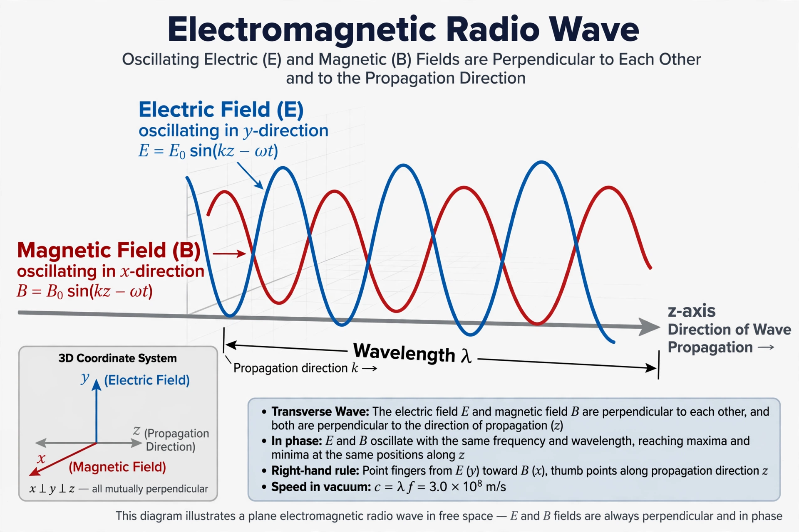

Radio waves are a type of electromagnetic radiation with the lowest frequencies and longest wavelengths in the electromagnetic spectrum, typically with frequencies below 300 gigahertz (GHz) and wavelengths greater than 1 millimetre. Like all electromagnetic waves, radio waves travel at the speed of light in vacuum and are produced by accelerating electric charges, most usefully by alternating current in an antenna.
The wavelength λ and frequency f are related by λ = c/f, where c is the speed of light (about 3 × 10⁸ m/s). Radio waves span from roughly 100,000 km waves at 3 Hz to 1 mm waves at 300 GHz, where they grade into microwaves and then infrared radiation. In the atmosphere they are propagated as ground waves, reflected by the ionosphere as skywaves (enabling long-distance shortwave communication), or line-of-sight space waves at higher frequencies.
Radio waves were predicted by James Clerk Maxwell's equations (1864) and first produced and detected experimentally by Heinrich Hertz in 1887–88 — the SI unit of frequency, the hertz, honours him. In the 1890s Guglielmo Marconi developed practical wireless telegraphy, achieving transatlantic transmission in 1901. Voice broadcasting began in the 1920s; radar, television, FM radio and satellite and mobile communications followed. Astronomer William Herschel had discovered the adjacent infrared radiation in 1800, the first extension of the spectrum beyond visible light.
Radio frequencies are divided into bands — from extremely low frequency (ELF) through medium frequency (MF, the AM broadcast band), high frequency (HF/shortwave), very high frequency (VHF, including FM radio) and ultra high frequency (UHF, television and mobile phones) up to super and extremely high frequency (SHF/EHF) used by satellite links, Wi-Fi and 5G millimetre-wave services. National regulators and the International Telecommunication Union allocate the spectrum to broadcasting, aviation, maritime, military, amateur radio and other uses.
Radio waves carry radio and television broadcasting, mobile telephony, Wi-Fi and Bluetooth, radar and navigation systems (including GPS), microwave ovens (which use 2.45 GHz radiation), radio astronomy, medical imaging (MRI) and countless remote-control and telemetry links. Natural sources include lightning and astronomical objects such as pulsars and quasars, studied by radio telescopes.